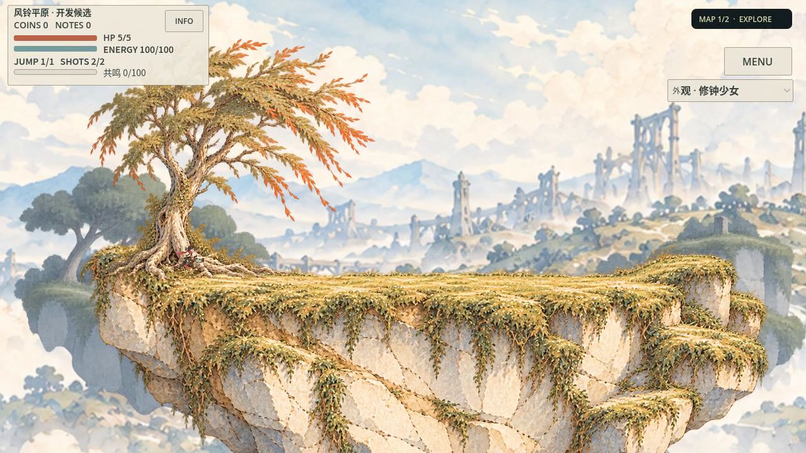
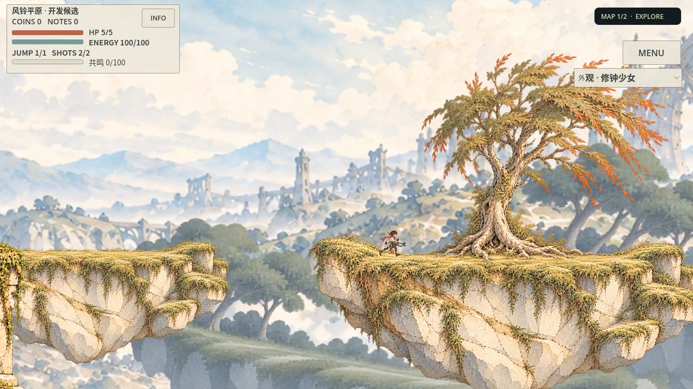
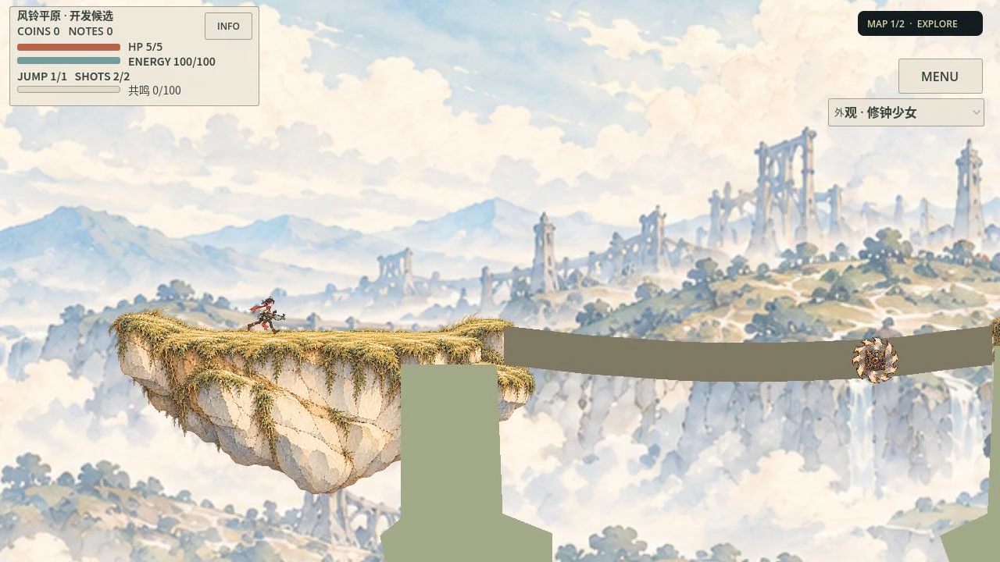
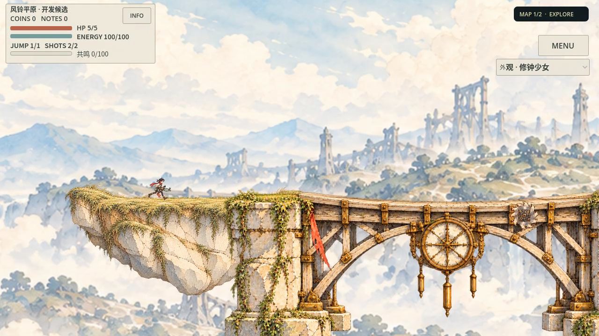
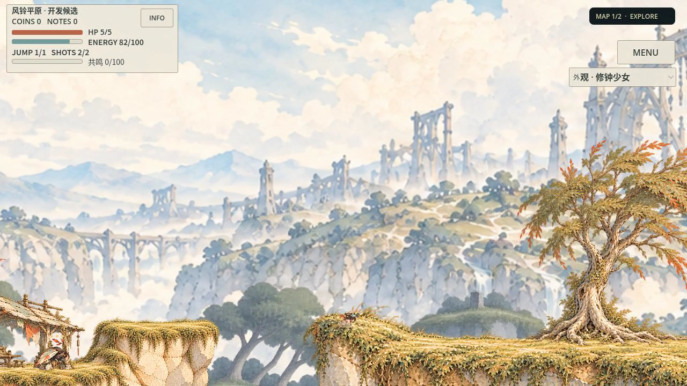

全部为1280×720真实Godot原帧/正常60fps电影，保留人物、敌人、锯与HUD。原PR84与新v2在同Seed下仍因版本改变排列和局部几何；以下是同场所用途对照，不是同轨迹纯美术A/B。P1候选风格未代签用户最终认可。




places-contract-01：邮谷→紧凑草坡→宽阶庭；35点，1961物理tick，HP5，零恢复。1966电影帧/60=32.7667秒。影片速度与真实设备性能不是同一证据。
预登记places-contract-02：邮谷→紧凑阶庭→宽草坡。仅在首链联合机制/局部可读性限定接受后执行，不是黄金艺术扩产。

落地姿态融进高频草缘；独审补看820/860/880确认是短时局部弱对比，不是全程遮挡。第二结构审查。
整体依旧有同源浮岛、金黄高频纹理与远景重复，没有证实商业黄金或任意场所自动设计。首拒绝 · 有限接受 · 独立工具审查 · 制作与恢复入口 · 完整结果